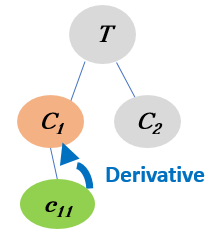

Health-related Quality of Life Needs of Patients with Long-term Respiratory Illnesses
This is a collection of video segments from YouTube videos with patient stories.
They have been automatically segmented, characterised and linked to domain concepts.
The videos in this page have been linked via "Derivative Linking" which means:
To become aware of a specific concept (Green oval) from a topic T, you will explore videos about its parent concept which is more generic (Orange oval).

Become aware of the concept STRENGTH by exploring its parent concept ENERGY from the topic PHYSICAL HEALTH
Each segment will start from a time point in the video and will stop when the corresponding concepts are covered.
You can re-watch the segment or watch other parts of the video, if you wish so.
The next video segment mentions ENERGY ( related to PHYSICAL HEALTH ). The segment is taken from a YouTube video with ID= MxmrjLQvg7E , and starts at 2.34 with a duration of 51 seconds.
The next video segment mentions ENERGY ( related to PHYSICAL HEALTH ). The segment is taken from a YouTube video with ID= wArV8Ho_C1A , and starts at 1.34 with a duration of 51 seconds.
The next video segment mentions ENERGY ( related to PHYSICAL HEALTH ). The segment is taken from a YouTube video with ID= pmuUnQ5Zi4Q , and starts at 1.0 with a duration of 52 seconds.
The next video segment mentions STRENGTH ( related to PHYSICAL HEALTH ). The segment is taken from a YouTube video with ID= VyGp12XbPzs , and starts at 0.59 with a duration of 81 seconds.
The next video segment mentions STRENGTH ( related to PHYSICAL HEALTH ). The segment is taken from a YouTube video with ID= e0KVtXL-TjY , and starts at 2.11 with a duration of 43 seconds.
The next video segment mentions STRENGTH ( related to PHYSICAL HEALTH ). The segment is taken from a YouTube video with ID= WShT-I0wCO4 , and starts at 5.06 with a duration of 31 seconds.
You watched video segments about (ENERGY) whcih is a generic concept that includes (STRENGTH). These concepts are related to PHYSICAL HEALTH.
The video segments were automatically extracted from popular YouTube videos on Healthy related Quality of life-Respiratory Illness, using algorithms for segmentation, characterisation and linking based on a theory for concept learning.
We hope you found the collection of video segments helpful.